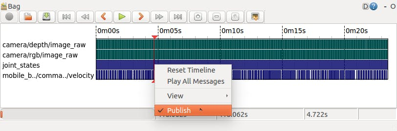

ROSを始めよう その７
前回の内容
その６
今回の内容
今回はROSの分散機能について見ていきましょう。
参考：
http://wiki.ros.org/ja/ROS/Tutorials/MultipleMachines
http://wiki.ros.org/ja/ROS/Tutorials/Recording%20and%20playing%20back%20data
ROSでの通信
今まで見てきたROSの通信ですが、簡単に仕組みを説明します。
例えば、Topic通信の場合です。
ROSのすべてのNodeはMasterのIPやポート番号などが記録された環境変数ROS_MASTER_URIを参照してMasterと通信できるので、以下のようになります。
1. PublisherのNodeとMasterが通信をして、NodeのIPやポート番号をMasterが内部情報として記録する
2. SubscriberのNodeとMasterが通信をして、NodeのIPやポート番号をMasterが内部情報として記録する
3. TopicにPublishやSubscribeがなされると、Topicの情報とそれに対するPublisher、SubscriberがどれなのかをMasterが内部情報として記録する
4. TopicのPublisherとSubscriberのペアができたら、MasterはそれぞれのNodeにお互いのIPやポート番号を伝える
5. PublisherとSubscriberは与えられた情報を使って、Masterを介さずに通信を始める
この仕組みによってROSでは複数のコンピューターを利用することができます。
192.168.0.1のコンピューターと192.168.0.2のコンピューターでTopic通信する場合、
(192.168.0.1側)
$ roscore
$ export ROS_JP=192.168.0.1
$ rosrun ros_beginner talker.py
(192.168.0.2側)
$ export ROS_MASTER_URI=http://192.168.0.1:11311
$ export ROS_JP=192.168.0.2
$ rosrun ros_beginner listener.py
とすれば良いです。
画像処理
先ほど説明したROSの分散機能を用いて、画像処理をしてみましょう。
カメラの準備
PCの場合、$ ls /dev/video*などで標準装備されているカメラを探せます。
USBカメラを使う場合、
sudo apt-get install ros-kinetic-usb-camでROSドライバをインストールし、
rosrun usb_cam usb_cam_nodeを実行すると、カメラの情報が/usb_cam/camera_infoに、画像が/usb_cam/image_rawにPublishされます。これは$ rostopic listで確認できます。
$ rosrun image_view image_view image:/usb_cam/image_rawとすれば画像が表示できます。
青色抽出プログラム
-color.py-
#!/usr/bin/env python
import rospy
import cv2
import numpy as np
from sensor_msgs.msg import Image
from cv_bridge import CvBridge, CvBridgeError
class ColorExtract(object):
def __init__(self):
# 青色抽出してマスクされた画像をPublishする
self._image_pub = rospy.Publisher('masked_image', Image, queue_size=1)
# 入力される画像をSubscribeする
self._image_sub = rospy.Subscriber('/usb_cam/image_raw', Image, self.callback)
# OpenCVのデータ形式cv::MatとROSのMessage形式sensor_msgs/Imageを変換する
self._bridge = CvBridge()
def callback(self, data):
# OpenCVの形式に変換
try:
cv_image = self._bridge.imgmsg_to_cv2(data, 'bgr8')
except CvBridgeError, e:
print e
hsv = cv2.cvtColor(cv_image, cv2.COLOR_BGR2HSV)
lower_blue = np.array([110,50,50])
upper_blue = np.array([130,255,255])
# 青を抽出してマスク画像とする
color_mask = cv2.inRange(hsv, lower_blue, upper_blue)
res = cv2.bitwise_and(cv_image, cv_image, mask=color_mask)
# ROSの形式に変換
try:
self._image_pub.publish(self._bridge.cv2_to_imgmsg(res, 'bgr8'))
except CvBridgeError, e:
print e
if __name__ == '__main__':
rospy.init_node('color_extract')
color = ColorExtract()
try:
rospy.spin()
except KeyboardInterrupt:
pass
青色認識で前進、赤色認識で後退させるプログラム
-color_vel.py-
#!/usr/bin/env python
import rospy
import cv2
import numpy as np
from sensor_msgs.msg import Image
from geometry_msgs.msg import Twist
from cv_bridge import CvBridge, CvBridgeError
class ColorExtract(object):
def __init__(self):
self._vel_pub = rospy.Publisher('cmd_vel', Twist, queue_size=1)
# デバッグ用
self._blue_pub = rospy.Publisher('blue_image', Image, queue_size=1)
# デバッグ用
self._red_pub = rospy.Publisher('red_image', Image, queue_size=1)
self._image_sub = rospy.Subscriber('/usb_cam/image_raw', Image, self.callback)
self._bridge = CvBridge()
# ロボットの速度
self._vel = Twist()
def get_colored_area(self, cv_image, lower, upper):
hsv_image = cv2.cvtColor(cv_image, cv2.COLOR_BGR2HSV)
mask_image = cv2.inRange(hsv_image, lower, upper)
extracted_image = cv2.bitwise_and(cv_image, cv_image, mask=mask_image)
# 色抽出した部分の画素数をカウント
area = cv2.countNonZero(mask_image)
return (area, extracted_image)
def callback(self, data):
try:
cv_image = self._bridge.imgmsg_to_cv2(data, 'bgr8')
except CvBridgeError, e:
print e
blue_area, blue_image = self.get_colored_area(
cv_image, np.array([50,100,100]), np.array([150,255,255]))
red_area, red_image = self.get_colored_area(
cv_image, np.array([150,100,150]), np.array([180,255,255]))
try:
self._blue_pub.publish(self._bridge.cv2_to_imgmsg(blue_image, 'bgr8'))
self._red_pub.publish(self._bridge.cv2_to_imgmsg(red_image, 'bgr8'))
except CvBridgeError, e:
print e
rospy.loginfo('blue=%d, red=%d' % (blue_area, red_area))
# 1000画素以上で速度指令を出す
if blue_area > 1000:
self._vel.linear.x = 0.5
self._vel_pub.publish(self._vel)
if red_area > 1000:
self._vel.linear.x = -0.5
self._vel_pub.publish(self._vel)
if __name__ == '__main__':
rospy.init_node('color_extract')
color = ColorExtract()
try:
rospy.spin()
except KeyboardInterrupt:
pass
$ roslaunch kabuki_gazebo kabuki_playground.launchでシミュレーターを実行
$ rosrun usb_cam usb_cam_nodeでカメラを準備
$ rosrun ros_beginner color_vel.py cmd_vel:=/mobile_base/commands/velocityで実行
デバッグ用に画像表示もしましょう。(&をつけるとバックグラウンドで実行できます、$ fgで戻せます)
$ rosrun image_view image_view image:=/blue_image &
$ rosrun image_view image_view image:=/red_image &
$ rosrun image_view image_view image:=/usb_cam/image_raw &
rosbagによる実験データの記録
rosbagというツールでTopicとして出力されたデータを記録・保存することができます。
記録
まずは$ rosrun usb_cam usb_cam_nodeでカメラを立ち上げ、$ rosrun image_view image_view image:=/usb_cam/image_rawで画像を確認しましょう。
$ rosbag record /usb_cam/camera_info /usb_cam/image_raw -O images.bagとすると、/usb_cam/camera_infoと/usb_cam/image_rawをimages.bagという名前で保存します。color_vel.pyなどを実行して実験を開始し、終了したらCtrl+cで終了しましょう。
$ rosbag record -aとすれば、全Topicを記録できます。
再生
$ rosbag play images.bagで記録したデータを再生できます。
$ rosbag play -l images.bagとすると、再生終了後、先頭に戻ります。
$ rosbag info images.bagとすると、中身を確認できます。
$ rqt_bag images.bagで中身を可視化できます。

画面の上の方に色々ボタンが並んでいますが、一番右の画像表示ボタンを押せば、画像が表示されます。また、各TopicをPublishしたい時には、発行したいTopicの行を右クリックしてPublishを選択して、上の方の再生ボタンを押せば良いです。
まとめ
今回はROSの分散機能について見ていきました。
次回は座標変換ツールtfなどについて見ていきましょう。
その８